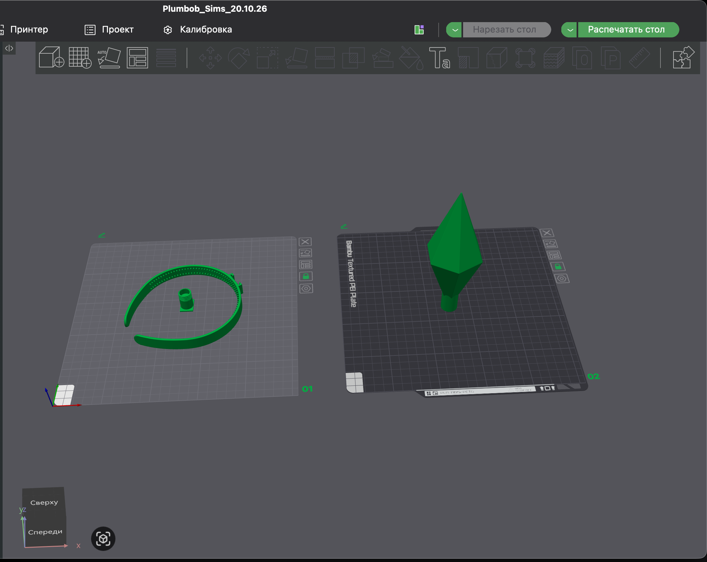

:format(webp)/https://fbi.cults3d.com/uploaders/16234658/illustration-file/b7c997bb-e9a1-4a80-b857-cb35dcc4f6d1/Plumbob.jpg)
Little Home · 3D-модель
Пламбоб из The Sims
Светящийся кристалл для косплея и Хэллоуина.
Исследуем, как предметы, звук и образ помогают человеку почувствовать историю и место.
Пламбоб из The Sims и подставка-неваляшка для колонки Алиса. Модели можно посмотреть и скачать на MakerWorld и Cults3D.
Светящийся кристалл для косплея и Хэллоуина.
Подставка-неваляшка для умной колонки.

Все модели Little Home: MakerWorld ↗·Cults3D ↗
С истории Парка Горького начался разговор о том, как помочь посетителю представить утраченную скульптуру не только по фотографии. Так появилась идея тактильной 3D-модели: она может дать возможность рассмотреть форму руками и стать частью экскурсии для незрячих и слабовидящих людей.
«Девушка с веслом» — история, с которой мы пришли к этой идее. Сама эта скульптура не опубликована нами как 3D-модель.
Коллекция ароматических свечей, созданная вместе с Олей и вдохновлённая Парком Горького.
 Смотреть проект на Behance ↗
Смотреть проект на Behance ↗В 2023 году мы подарили свечи друзьям, знакомым и коллегам — как памятный предмет, сохраняющий атмосферу места.

:format(webp)/https://fbi.cults3d.com/uploaders/16234658/illustration-file/fd2e5b9d-26db-4cb4-8069-8ba1074d31c4/photo_2025-12-13_22-36-44.jpg)